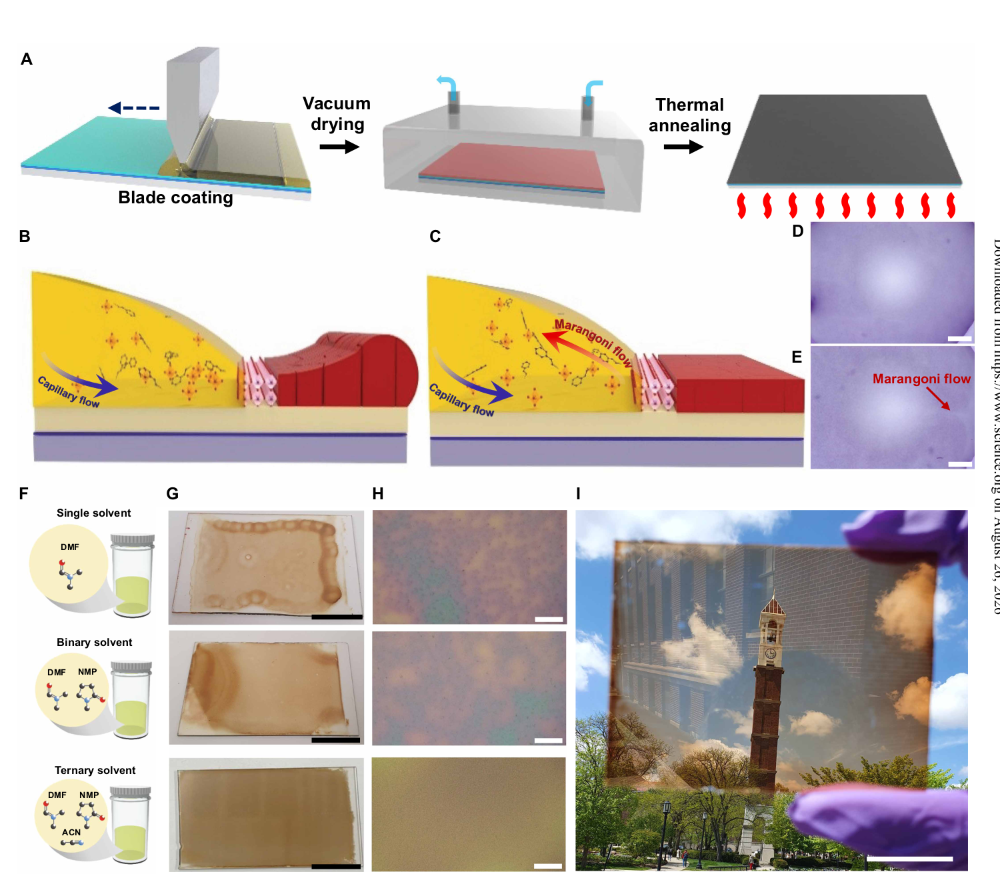
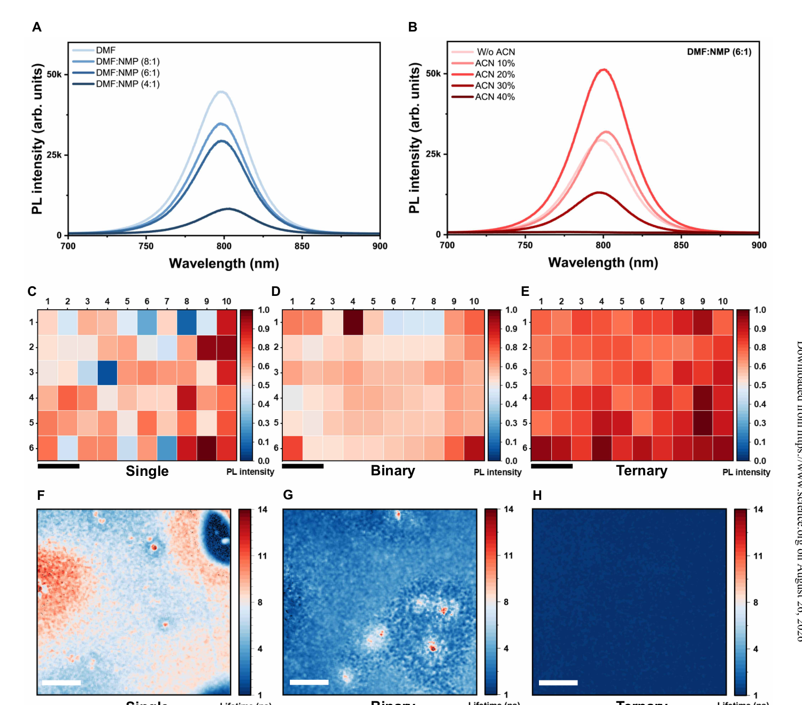
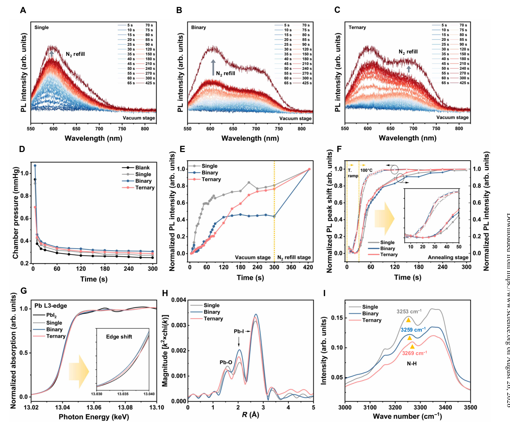
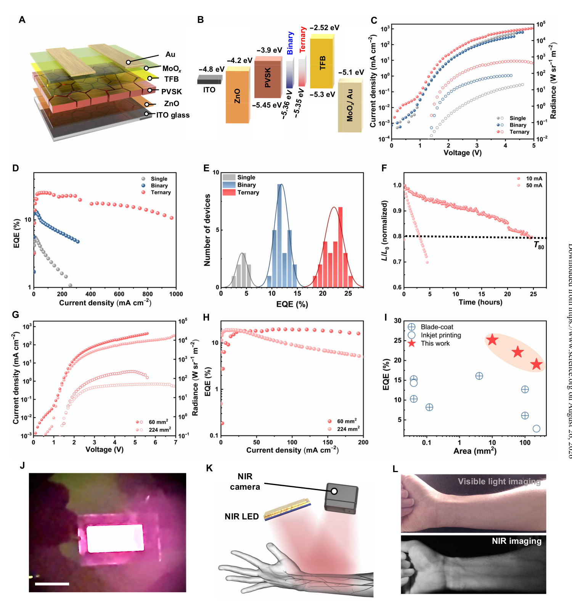

刮涂钙钛矿发光层时，怎样同时调节回流和结晶？
三元溶剂中的组分分别影响液滴尺度的回流和前驱体的配位、结晶。论文将沉积分布与大面积发光器件表现联系起来。
研究背景
- PeLED 发光层只有几十纳米厚，所用前驱体比厚膜太阳能电池稀约一个数量级；在大面积刮涂中，必须先蒸掉大量溶剂才开始结晶，宏观溶剂流动因而直接决定最终厚度和发光均匀性。
- 单一 DMF 容易形成强烈的径向毛细流和咖啡环；加入 NMP 能形成 PbI2-NMP 中间体并调节相转化，但残余 NMP 又可能造成动力学陷阱和非辐射损失。
- 作者提出 ACN 的双重角色：高挥发性造成表面张力梯度和 Marangoni 回流，同时加快溶剂移除与过饱和，从而解除 NMP 配位造成的慢转化。
- 论文真正回答的不是“哪种溶剂比例效率最高”这一单点问题，而是三元溶剂能否同时满足宏观厚度均匀、局部辐射复合和大面积器件可放大性。
研究方法
- 前驱体：FAI/PbI2/5AVA 摩尔比 2.5:1:0.7，PbI2 最终浓度 0.14 M。二元基线为 DMF:NMP = 6:1；三元体系在此基础上加入 ACN，最佳条件为 ACN 占总前驱体体积 20%。
- 成膜：20°C、20% RH 干燥箱内刮涂，速度 10 mm s⁻¹，刮刀间隙 50 μm；涂后数秒内转入约 1.3 kPa 真空 5 min，再于 100°C 退火 16 min。
- 流动与形貌：PS 微球示踪液滴内部运动；宏观照片、光学显微、厚度映射和 SEM 评估咖啡环、团聚和厚度均匀性。
- 光物理：在 48 mm × 28 mm 区域取 60 个点做 PL 映射；用 FLIM、PLQY 评估空间复合均匀性和辐射效率。
- 动力学与配位：真空阶段同步记录腔压和原位 PL，退火阶段跟踪 PL 峰位和强度；XANES/EXAFS、FTIR 和补充材料中的 NMR 用于分析 Pb-溶剂及 NMP-FA 相互作用。
- 器件：ITO/ZnO/perovskite/TFB/MoOx/Au，比较 10、60、224 mm² 有效面积，并展示 462 mm² 均匀发光器件和 224 mm² 静脉成像原型。

Figure 1｜ACN 诱导的回流、咖啡环抑制与大面积膜均匀性
- 回答的问题： 第三溶剂 ACN 是否能改变溶液内部输运，使单/二元体系的边缘堆积转变为均匀沉积？
- 图中证据或方法： A 给出刮涂—真空干燥—退火流程；B/C 是毛细外流与 Marangoni 反向回流的机理示意；D/E 用 PS 微球示踪比较单溶剂和三元溶剂液滴；F-H 比较三种配方的宏观照片和显微形貌；I 展示 75 mm × 50 mm 半透明均匀膜。
- 支撑的结论： 单一 DMF 出现环状沉积，DMF/NMP 仍有边缘加厚；DMF/NMP/ACN 的回流与毛细外输运竞争，宏观咖啡环和局部团聚显著减弱。补充文本给出的厚度映射显示三元膜约 40 nm，而二元膜边缘可超过 400 nm。
- 局限与读图注意： B/C 是作者的解释性示意，不是实测速率场；PS 微球液滴试验与刮涂后真空湿膜的几何、蒸发边界和颗粒相互作用不同。论文没有给出 PIV 速度、局部表面张力、温度或 ACN 浓度场，因此这里只能确认“出现了与回流一致的运动和形貌改善”，不能定量证明 Marangoni 项压过了毛细项。
具体结果
结果 1：三元体系同时改善绝对发光强度和空间均匀性

Figure 2｜溶剂比例优化与大面积光物理均匀性
- 回答的问题： 改善宏观外观是否也改善发光层的局部辐射质量，而且最佳 ACN 比例是否存在？
- 图中证据或方法： A 显示 NMP 增加时稳态 PL 总体下降；B 显示固定 DMF:NMP = 6:1 后，ACN 在 20% 时 PL 最高，继续增至 30-40% 反而下降；C-E 是 60 个空间测点的归一化 PL 热图；F-H 是 FLIM 空间图。
- 支撑的结论： 二元体系只能部分改善覆盖，三元 20% ACN 配方同时获得高 PL 和空间均匀性。三元膜的寿命主要集中在约 1-2 ns，且独立 PLQY 测量平均约 78%、最高超过 80%，支持快速且较均匀的辐射复合，而不是简单把短寿命解释为更强非辐射损失。
- 局限与读图注意： C-E 为逐图归一化热图，会弱化不同配方绝对强度的直接比较；短寿命本身不能区分辐射与非辐射通道，必须结合 PLQY 才能解释。PLQY 只对优化后的三元膜可靠测量，缺少三种体系同条件的完整量化对照；主文也未给出各比例的重复样本误差条。
结果 2：ACN 解除 NMP 动力学陷阱，但证据主要是间接代理量

Figure 3｜从溶剂移除到中间体转化的动力学证据链
- 回答的问题： 三元体系为何既避免 DMF 的过快失控结晶，又避免 NMP 残留造成的慢辐射建立？
- 图中证据或方法： A-C 是真空阶段三种配方的时间分辨 PL 光谱；D 同步记录腔压；E 比较真空阶段归一化 PL；F 比较退火阶段 PL 峰位转化和强度建立；G-I 用 XANES、EXAFS 和 FTIR 表征 Pb 局部配位及 FA-NMP 相互作用。
- 支撑的结论： DMF 单溶剂压力下降最快并迅速出现 PL，作者将其解释为过早过饱和；DMF/NMP 压力下降最慢，在 N2 回填前形成长平台，显示 NMP 稳定中间体；三元体系处于两者之间并连续演化。退火时二元和三元的峰位转化均较快，但三元 PL 强度约 150 s 达到 95%，快于二元的约 210 s，支持 ACN 促进残余中间体移除和有效辐射通道建立。EXAFS 拟合显示 I 配位数从 2.8 增至 3.1，Pb-O 键由 2.28 Å 增至约 2.40-2.41 Å；FTIR/NMR 则支持 NMP-FA 氢键及 ACN 对局部溶剂化壳层的调节。
- 局限与读图注意： 腔压是总气相响应，不能分辨 DMF、NMP、ACN 各自的局部挥发通量；PL 峰位和强度不是局部过饱和度、晶相体积分数或成核率的直接测量。XANES/EXAFS/FTIR 是体平均信号，将它们与湿膜内空间流动相连仍需推断；“ACN 部分置换或空间限域后增强 NMP-FA 氢键”属于作者机制解释，而非直接成像结果。
结果 3：器件面积放大后仍保持较高效率，但统计证据在不同面积间不对称

Figure 4｜从 10 mm² 器件到大面积 NIR 应用演示
- 回答的问题： 薄膜均匀性和结晶调控能否转化为器件效率、重复性、面积放大能力和实际照明应用？
- 图中证据或方法： A/B 给出器件结构和能级；C-E 比较单、二、三元配方的 J-V-R、EQE-J 和峰值 EQE 分布；F 是恒流 T80；G/H 是 60 和 224 mm² 器件；I 与既有大面积 PeLED 比较；J-L 展示 462 mm² 均匀发光和 224 mm² 静脉成像。
- 支撑的结论： 10 mm² 三元器件峰值 EQE 为 25.2%，显著高于单元 5.5% 和二元 13.8%；三元器件 n = 25 的平均 EQE 为 22.2%，变异系数 8.1%。60 和 224 mm² 器件峰值 EQE 分别为 22.1% 和 19.0%；10 mA cm⁻² 下 T80 为 23.4 h，50 mA cm⁻² 下约 3 h。462 mm² 器件显示均匀 NIR 发光，224 mm² 器件可作为静脉成像光源。
- 局限与读图注意： 单元器件只有 n = 8，而二元和三元各 n = 25；大面积 60/224/462 mm² 的器件数量和良率分布未在主图中充分给出，因此不能把冠军值等同于制造良率。作者把面积放大后的效率损失主要归因于 ITO 串联电阻，但主图未展示完整的电阻分解；静脉成像是定性原型，不是医学性能验证。
关键机制
论文提出的链条可以写成：
- 可直接观察： 三元体系出现不同于单元体系的微球运动；咖啡环、边缘厚化和 PL 空间波动下降。
- 作者解释： 高挥发 ACN 造成表面张力梯度，诱导与毛细外流竞争的 Marangoni 回流。
- 可直接观察： 腔压、真空/退火原位 PL 随配方改变；三元体系的中间体转化和辐射建立介于“DMF 过快”和“DMF/NMP 过慢”之间。
- 作者解释： NMP 形成可转化的配位中间体，ACN 加快溶剂移除并重排局部溶剂化结构，解除 NMP 动力学陷阱。
- 结果： 约 40 nm 大面积均匀膜、高 PLQY、较低器件离散度和面积放大后的高 EQE。
关键 caveat 是第 2 步和第 4 步并未被同一个时空分辨实验直接连接。ACN 同时改变挥发、表面张力、黏度、润湿、配位和过饱和，因此现有数据支持“协同有效”，但不能唯一识别哪一个通道对每项结果贡献最大。
适用范围与局限
- 三元溶剂是多变量干预：ACN 不只改变 Marangoni，应避免把所有形貌和结晶改善都归因于一个流动机制。
- 流动证据来自液滴示踪和终态形貌，没有刮涂湿膜中的定量 PIV、局部膜厚、温度、组分或表面张力场。
- 腔压与 PL 是全局/光学代理量，缺少局部过饱和度、成核密度和晶相体积分数的同步定量。
- 60 点 PL 图提供空间覆盖，但仍不足以给出连续面积上的缺陷概率；大面积器件的完整样本数、良率和批间稳定性未在主文充分呈现。